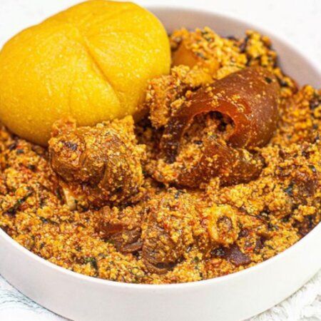

Ofe Egusi

Ofe egusi with semo
Ingredients
- Egusi/li>
- palm oil
- fresh pepper
- Shombo
- Onions
- salt
- seasoning cube
- Beef
- crayfish
- ugu leaf
Steps
- Pour a little quantity of water into the pot
- mix the grinded Egusi,make moulds and put it into the boiling water
- cover to cook for 40 minutes
- take out the moulds and pound it
- pour in the stock water/li>
- Salt, fresh pepper and seasoning cube to taste
- put the Beef
- close the pot and allow it to cook for 20 minutes
- lastly, ugu leaf and Grounded crayfish/li>